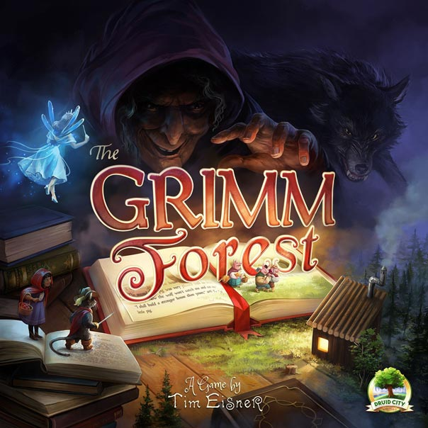
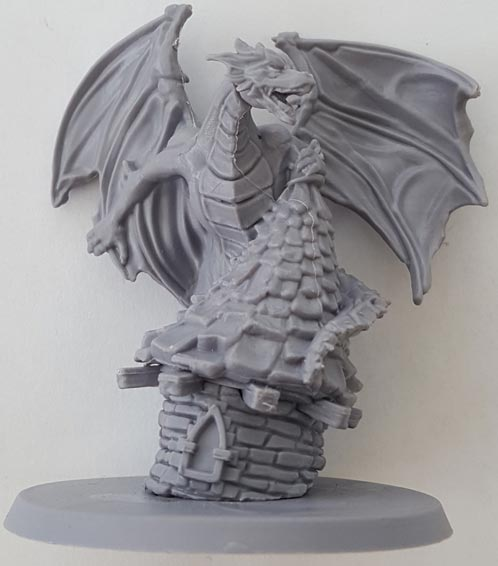
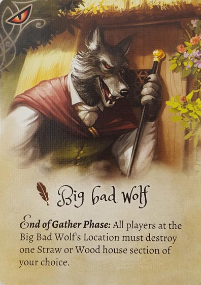
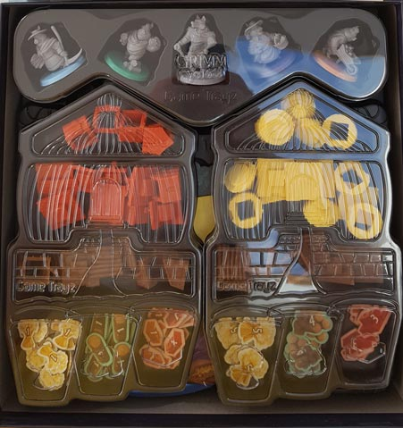
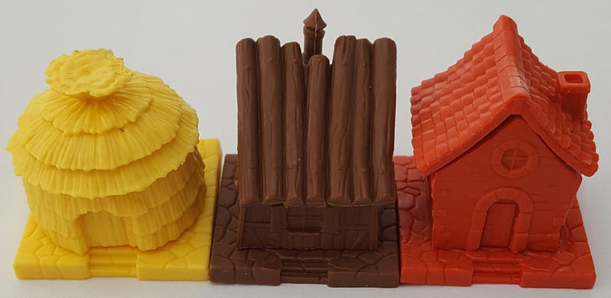
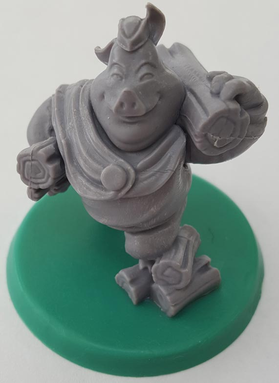

In our The Grimm Forest review, we pick apart the brand new, fantastical family game that’s designed by Tim Eisner and published by Druid City Games. Maniacal King Reginald is looking for a new royal builder to develop the legendary Grimm Forest, so three little piggies set out to make a name for themselves and win the job. Along the way, they make friends with the likes of Hansel & Gretel and enemies of the Big Bad Wolf and others. Read on for more!

D reviews The Grimm Forest
 (Author’s
note: this review is meant to accompany our gameplay video and will not
go in-depth on the game’s rules. If you’re interested in learning how
the game is played, please watch the video. It’s not bad.)
(Author’s
note: this review is meant to accompany our gameplay video and will not
go in-depth on the game’s rules. If you’re interested in learning how
the game is played, please watch the video. It’s not bad.)
I love board games! Board games are great. That being said, something I don’t love about board games is cleaning them up. Sometimes it’s not so bad, and even the biggest games usually don’t take more than maybe five minutes to clean up, but it’s always such a bummer to me to have to do a chore immediately after having fun with a game. I mention all of this because The Grimm Forest is the first game I’ve played that I actually enjoy putting back into the box. The game has a whole lot of components and instead of your run-of-the-mill inlays that you just dump the pieces and cards into, it features custom trays with specific, sometimes even labeled (!), spaces for each component. Every card deck, mini, and player board fits nicely and neatly into their designated location, and the various trays stack on top of each other smoothly. It is so satisfying. I love it.
And those components are no slouch, either. The various miniatures are the immediate eye-catcher, despite being unpainted. They are made of sturdy plastic and well-molded, featuring a great deal of detail. They are easily paintable, too, if you wanted to take them to the next level. Perhaps my favorite thing about them is how unnecessary they actually are. The monsters included are only used once in a while and then removed from the game, while your pigs are just moving back and forth between your board and one of the gathering boards. Using simple tokens or something similar would have been a perfectly reasonable choice, but the people at Druid City Games really went the extra mile, and the game is better for it. And I’d be remiss if I didn’t mention the art of Lina Cossette and David Forest (no relation), which is beautiful and vibrant and really captures the fairy tale feel that the game needs. The four, unique player boards are really something special.
So, I think I’ve established that The Grimm Forest’s production values are top-notch, but how about the gameplay? Well, for those of you who are less prone to geeking out over plastic inlays, I can happily tell you that the game is even more fun to play than it is to clean up. It’s certainly not a complicated game, and at the start it honestly feels a little too light, but as the game progresses and strategies become apparent, it starts to develop a nice bit of depth and a good amount of tension. The revealing of where each player is going to gather every turn becomes a bigger concern once you see your opponent’s structures start to come together, and choosing to hinder or sabotage one or more of them becomes almost necessary if you fall behind.
When I first read the rules I wasn’t sure that the difference in building sturdiness would be relevant enough to justify the difference in availability between the resources, but I’m glad to say that I was wrong about that. The game is well-balanced, and it’s rather difficult for one player to really pull away from the others without a lot of luck with the cards. It’s not at all unlikely that multiple players will finish their third house on the same turn, making the choice of building materials rather important, given that they are the tiebreaker.
I honestly don’t have any major issues with The Grimm Forest, but I do have a couple of minor ones. The lesser concern is something I mention in the video, which is that the actual “goal” of the game is sort of a head-scratcher. You’re competing to be the lucky pig that gets to… deforest the titular woods in order to satisfy the development plans of the greedy king. Is that a prize you really want to be winning? I know it’s just a silly board game, but I can think of better reasons than that for the nieces and nephews of the Three Little Pigs to be building houses. Also, while the cards definitely add an extra layer of strategy to the proceedings, they also introduce an extra element of luck and imbalance that can be frustrating. I’d honestly be interested in playing the game without them, or perhaps with just one of the decks, and seeing how fun that was. I suspect it wouldn’t be bad. Overall though, The Grimm Forest is a very fun, very well-made game, with pros that significantly outweigh its cons. I highly recommend it.
D’s Rating: Four and One-Half Stars out of Five.
Will reviews The Grimm Forest
 To be honest, I probably should’ve known more about The Grimm Forest before
I first played it. The game had an unsurprisingly successful
Kickstarter prior to release, and I’m fairly certain I checked it out on
there at some point. And yet, when it came time to play the game, I had
forgotten almost everything I’d read and seen about it. Now that I’ve
played The Grimm Forest, I can say with some certainty that it
deserves the optimism and praise it’s received from gamers. This is a
lighthearted yet thoughtful family game that should appeal to folks of
all age ranges, especially if they love the Brothers Grimm and Hans
Christian Andersen.
To be honest, I probably should’ve known more about The Grimm Forest before
I first played it. The game had an unsurprisingly successful
Kickstarter prior to release, and I’m fairly certain I checked it out on
there at some point. And yet, when it came time to play the game, I had
forgotten almost everything I’d read and seen about it. Now that I’ve
played The Grimm Forest, I can say with some certainty that it
deserves the optimism and praise it’s received from gamers. This is a
lighthearted yet thoughtful family game that should appeal to folks of
all age ranges, especially if they love the Brothers Grimm and Hans
Christian Andersen.
Once you open the box for the first time, you’ll immediately realize that The Grimm Forest is something special, at least component-wise. Everything is sorted in custom-molded trays and fits well inside the fairly large box – it’s an impressive setup. And then there are the components themselves, which are mostly made from sturdy, high quality plastic. The pieces that comprise the different portions of the houses are the most impressive, given that they stack flawlessly. It’s extremely satisfying to build the houses from the ground up, that is until one of the intricately detailed monster minis comes along and blows them down. The artwork is similarly well done, matching the bubbly fantasy theme to a T. All in all, the components and artwork are pretty amazing, even if they feel slightly over-produced for such a light game.
Gameplay-wise, The Grimm Forest lived up to my expectations and was mostly gratifying. The concept is simple: you gather resources, use them to build house sections, and collect Fable and/or Friend cards along the way. Once someone has three complete houses, they win the game, and there are a bunch of tiebreakers as well. The strategy comes in a number of ways. For one, you have to choose where you’re going to gain resources. For instance, you might need some bricks to complete your brick house, but someone else might need bricks as well. If you both end up going for brick, you’ll end up splitting that resource, and the same goes for wood and hay. This is why it’s very important to scan the other player’s boards in order to ascertain which resources they need. Additionally, it’s very satisfying to prevent your opponents from collecting the full amount of resources on a turn, even if it means you’ll be similarly shortchanged.
Another way that strategy presents itself is with the Fable and Friend cards. The Fable cards usually provide you with options that allow you to mess with your opponents, such as putting the monsters in play. Alternatively, the Friend cards are entirely for you, and they provide additional benefits, as well as special actions for you to take. Like any board game that features cards like these, there are some that are better than others. But for the most part, The Grimm Forest is very well balanced. Personally, I really enjoyed the Fable cards, since they allowed me to screw with D and Graham. However, I do think that there should be a limit to how many Fables a player can hold before they have to play one. Why? Well, there’s a temptation to hoard the Fables until the end of the game, when it’s most important to sabotage your opponents. The problem is that the end of the game can kind of sneak up on you in The Grimm Forest. This is why I believe there should be a rule forcing players to play their cards earlier and more consistently throughout the game.
When it’s all said and done, I do wish that The Grimm Forest featured a bit more intrigue. I guess what I’m saying is that I didn’t find it to be that interesting. I’m not the biggest Brothers Grimm or Andersen fan, so the appeal of the theme was mostly lost on me. The gameplay is good here, but it’s also shallow and intended to appeal to families, which means it suffers from the unfortunate family game side effect of being bland. The “take that” elements of the gameplay are indeed fun, but they also make it so that it feels like the game is running itself sometimes, and that the outcome is out of your hands. I guess I could compare The Grimm Forest to a Christmas tree – it’s really well decorated and pleasant, but at its core, it’s just a banal, uninspiring tree.
That’s not to say that The Grimm Forest is bad in any way; it’s actually quite good in some areas. I just don’t think that I’m the intended audience for it, and that’s fine. Because it’s so easy to grasp, the game is actually quite replayable, and I’m more than willing to give it another go. Until then, I guess I can take some pleasure in looking at it. The game is dang gorgeous.
I give The Grimm Forest a: B-
Leave a Reply
You must be logged in to post a comment.